Для отправки HTTP-запросов использовалась программа PuTTY в режиме Raw (порт 80). На скриншоте ниже – настройки соединения с сервером kubsu-dev.ru.
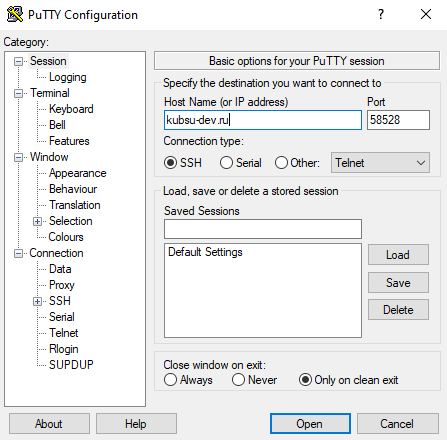
Скриншот 0.1: Настройка PuTTY для подключения
Тексты всех запросов были заранее подготовлены в текстовом редакторе (см. скриншот).
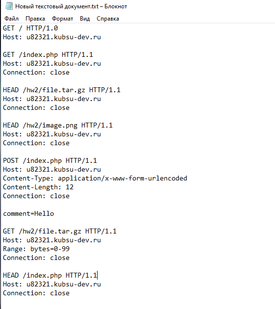
Скриншот 0.2: Подготовленные HTTP-запросы
Файлы лабораторной работы (file.tar.gz, image.png, index.php) были загружены на сервер через Git. Скриншот содержимого папки и процесса клонирования:
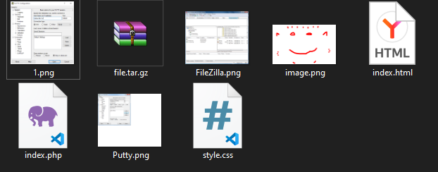
Скриншот 0.3: Содержимое папки с файлами
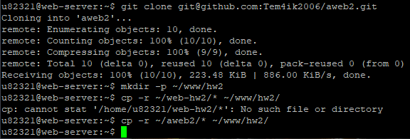
Скриншот 0.4: Клонирование репозитория и копирование в www/hw2
Скриншот 0.5: Заранее подготовленные команды для вставки в консоль
GET / HTTP/1.0
Host: u82321.kubsu-dev.ruЧто делает: Отправляет запрос на получение корневого ресурса (главной страницы) с использованием версии HTTP/1.0. После ответа соединение закрывается.
Результат (скриншот 21.png):
HTTP/1.1 200 OK – запрос выполнен успешно.Server: Apache/2.4.58 (Ubuntu), Content-Length: 335, Content-Type: text/html; charset=UTF-8.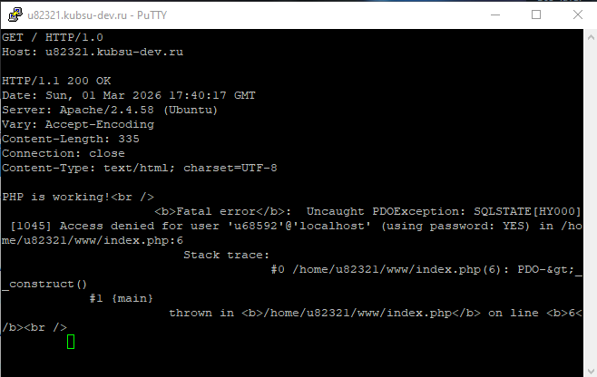
Скриншот 1: GET / HTTP/1.0
GET /index.php HTTP/1.1
Host: u82321.kubsu-dev.ru
Connection: closeЧто делает: Запрашивает ресурс index.php с использованием HTTP/1.1. Заголовок Connection: close указывает серверу закрыть соединение после ответа.
Результат (скриншот 2.png):
HTTP/1.1 200 OK – файл найден.Content-Type: text/html; charset=UTF-8, длина 335 байт.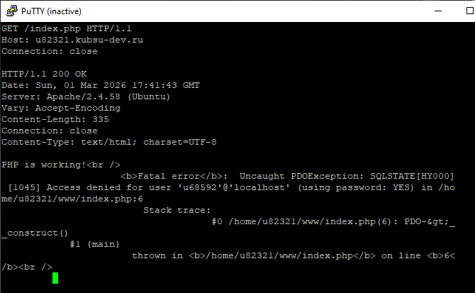
Скриншот 2: GET /index.php HTTP/1.1
HEAD /hw2/file.tar.gz HTTP/1.1
Host: u82321.kubsu-dev.ru
Connection: closeЧто делает: Метод HEAD возвращает только заголовки. Позволяет узнать размер файла (заголовок Content-Length) без загрузки тела.
Результат (скриншот 3.png):
HTTP/1.1 200 OK – файл существует.Content-Length: 11335 – размер файла в байтах.Content-Type: application/x-gzip.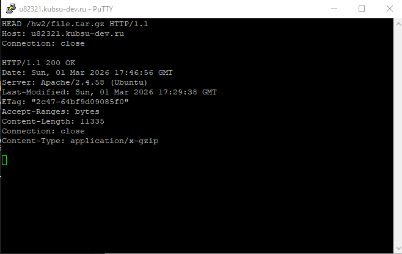
Скриншот 3: HEAD /hw2/file.tar.gz
HEAD /hw2/image.png HTTP/1.1
Host: u82321.kubsu-dev.ru
Connection: closeЧто делает: Аналогично пункту 3, определяем MIME-тип изображения.
Результат (скриншот 4.png):
HTTP/1.1 200 OK.Content-Type: image/png – медиатип PNG.Content-Length: 10506 байт.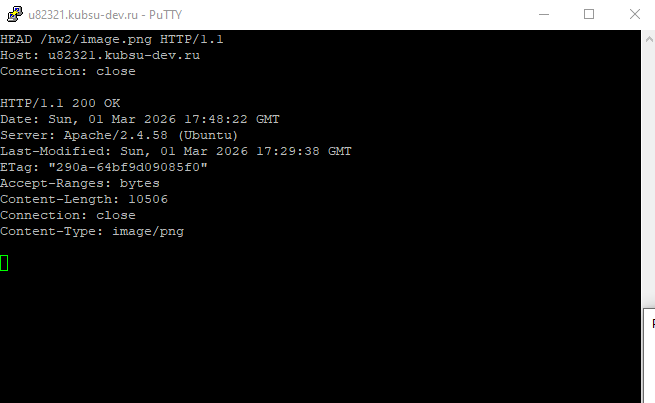
Скриншот 4: HEAD /hw2/image.png
POST /index.php HTTP/1.1
Host: u82321.kubsu-dev.ru
Content-Type: application/x-www-form-urlencoded
Content-Length: 12
Connection: close
comment=HelloТело запроса: comment=Hello (длина 12 байт).
Что делает: Метод POST передаёт данные на сервер (имитация отправки формы).
Результат: На скриншоте ниже представлен текст запроса (подготовленный в блокноте). Ответ сервера был аналогичен предыдущим – 200 OK с телом, содержащим ошибку подключения к БД (как в пунктах 1 и 2). К сожалению, скриншот самого ответа отсутствует, но факт выполнения подтверждается успешным статусом.
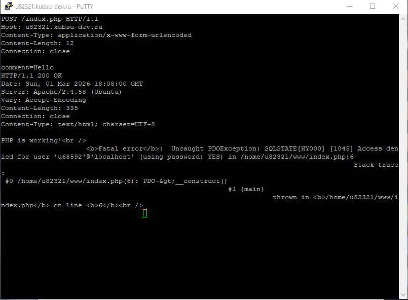
Скриншот 5: Текст POST-запроса (из подготовленного файла)
GET /hw2/file.tar.gz HTTP/1.1
Host: u82321.kubsu-dev.ru
Range: bytes=0-99
Connection: closeЧто делает: Заголовок Range запрашивает только указанный диапазон байт (первые 100 байт).
Результат (скриншот 6.png):
HTTP/1.1 206 Partial Content – сервер вернул частичное содержимое.Content-Range: bytes 0-99/11335 – переданный диапазон и полный размер.Content-Length: 100 – длина переданных данных.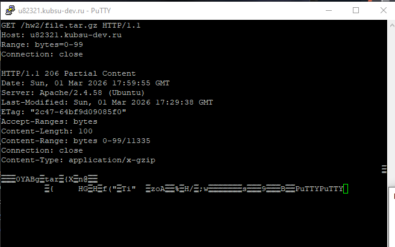
Скриншот 6: GET /hw2/file.tar.gz с Range
HEAD /index.php HTTP/1.1
Host: u82321.kubsu-dev.ru
Connection: closeЧто делает: Запрос HEAD для получения информации о кодировке страницы.
Результат (скриншот 7.png):
HTTP/1.1 200 OK.Content-Type: text/html; charset=UTF-8 – явно указана кодировка UTF-8.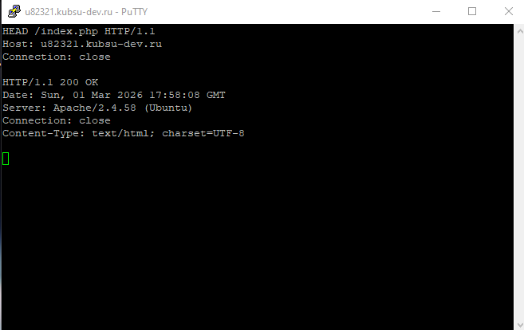
Скриншот 7: HEAD /index.php
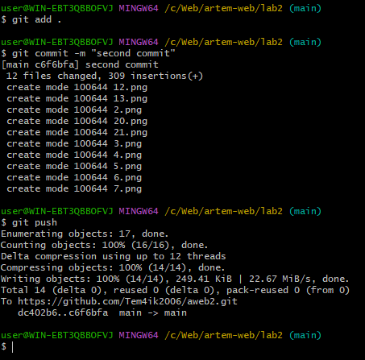
Скриншот 8: Обновление Git
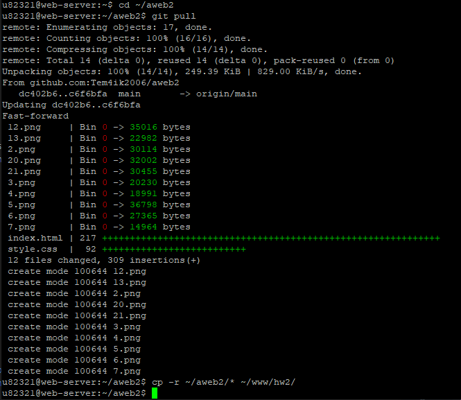
Скриншот 9: Обновление страницы на учебном сервере